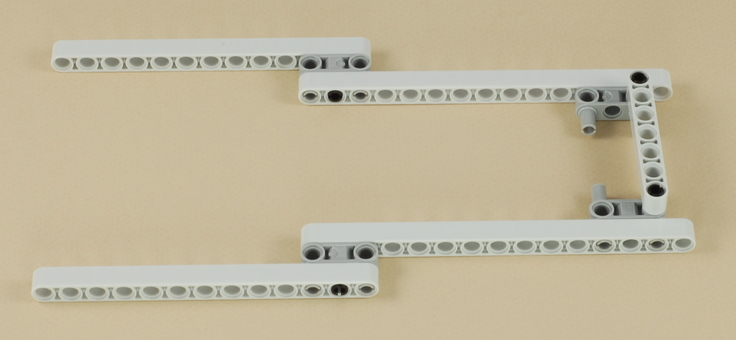
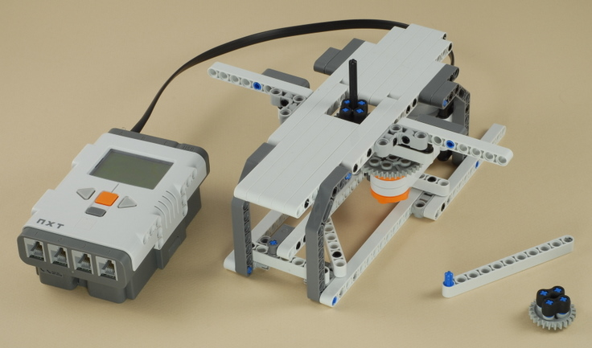

Fun Projects for your LEGO® MINDSTORMS® NXT!
|
|
Fun Projects for your LEGO® MINDSTORMS® NXT! |
| Spin Art |
|

1


2

3
4
5
6
7
8

9
10
11

12

13
14
| The four blue pegs at the end of the legs peg into the base, and the peg at the bottom of the motor assembly must also peg into the cross bar in the base. |
15
Use a medium or long wire to connect the motor to port A on the NXT.
16
| These two parts are used to cut out and attach the paper circles. They are not attached anywhere. |

| Spin
Art Programming Use the program Spin A for the Spin Art machine. This program is called "Spin A" because it spins the motor connected to port A on the NXT. The program also allows you to control the speed of the motor with the buttons on the NXT brick. This program could be used for any creation you make that needs one motor turning, with the ability to control the motor speed. |
| Using the Spin Art
Machine To make spin art, you will need to cut out circular pieces of paper. The separate 11-hole beam with the blue peg at the end can be used to help you mark out circles for cutting, and the gear with the rubber pieces on it is used to attach them to the spinning machine. See the Instructions for Using the Spin Art Machine for details. Important: Make sure both sides of the paper you use are clean and not printed or written on in any way. Do not turn over your circles and use the bottom side after drawing on the top. Any ink on the bottom side of the paper circles will rub off onto the white LEGO beams of the Spin Art machine. This includes paper already printed on one side with laser printer or copy machine toner or ink jet printer ink. |
Challenges
|
|
Copyright
©
2007-2009 by Dave Parker. All rights reserved. |